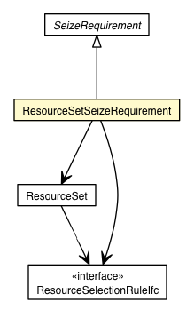

jsl.modeling.elements.resource
Class ResourceSetSeizeRequirement

java.lang.Object
 jsl.modeling.elements.resource.SeizeRequirement
jsl.modeling.elements.resource.ResourceSetSeizeRequirement
jsl.modeling.elements.resource.SeizeRequirement
jsl.modeling.elements.resource.ResourceSetSeizeRequirement
- All Implemented Interfaces:
- Comparable<SeizeRequirement>
public class ResourceSetSeizeRequirement
- extends SeizeRequirement
| Methods inherited from class java.lang.Object |
clone, equals, finalize, getClass, hashCode, notify, notifyAll, toString, wait, wait, wait |
myResourceSet
protected ResourceSet myResourceSet
myRule
protected ResourceSelectionRuleIfc myRule
mySaveResourceKey
protected String mySaveResourceKey
ResourceSetSeizeRequirement
public ResourceSetSeizeRequirement(ResourceSet resource)
ResourceSetSeizeRequirement
public ResourceSetSeizeRequirement(ResourceSet resource,
int amt)
ResourceSetSeizeRequirement
public ResourceSetSeizeRequirement(ResourceSet resource,
int amt,
int priority)
ResourceSetSeizeRequirement
public ResourceSetSeizeRequirement(ResourceSet resource,
int amt,
int priority,
boolean partialFillFlag,
ResourceSelectionRuleIfc rule,
String saveKey)
getResourceSelectionRule
public ResourceSelectionRuleIfc getResourceSelectionRule()
setResourceSelectionRule
public void setResourceSelectionRule(ResourceSelectionRuleIfc rule)
getResource
public SeizeIfc getResource()
- Specified by:
getResource in class SeizeRequirement
createRequest
public Request createRequest(Entity entity,
AllocationListenerIfc listener)
- Specified by:
createRequest in class SeizeRequirement
getSaveResourceKey
public String getSaveResourceKey()
setSaveResourceKey
public void setSaveResourceKey(String resourceKey)
Copyright © 2012 Manuel D. Rossetti. All Rights Reserved.